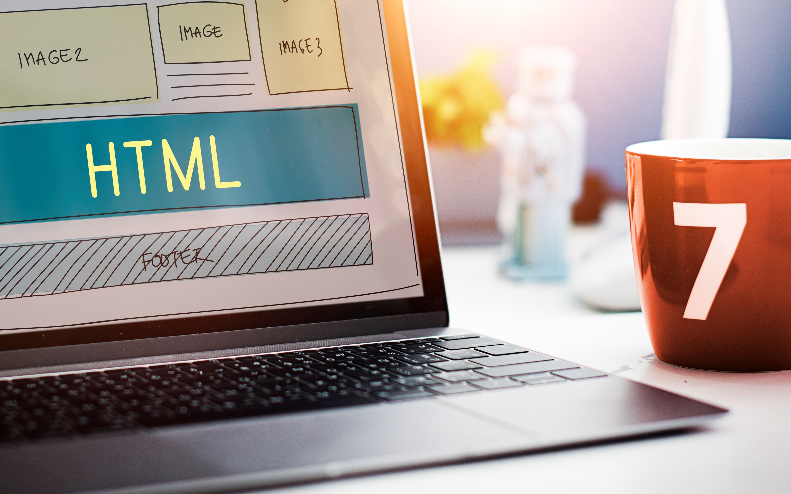

Tips Membuat Website yang Menarik
9 Agustus 2020
Sebuah website yang menarik dan profesional dapat membantu bisnis Anda terlihat lebih serius dan kredibel di mata pengunjung. Selain itu, website yang menarik juga dapat meningkatkan jumlah pengunjung dan memperbaiki reputasi
bisnis Anda. Untuk membuat website yang menarik, ada beberapa hal yang perlu diperhatikan, seperti:
Gunakan desain yang sesuai dengan brand dan target market Anda. Pastikan desain tersebut kreatif, inovatif, dan mudah dinavigasi.
Pilih warna yang tepat untuk website Anda. Warna yang digunakan harus sesuai dengan brand dan target market Anda, serta dapat meningkatkan mood dan emosi pengunjung.
Gunakan gambar dan visual yang berkualitas tinggi dan sesuai dengan brand Anda. Hal ini dapat membuat website Anda lebih menarik dan mudah diingat.
Tampilkan informasi dengan jelas dan singkat. Pengunjung biasanya tidak memiliki waktu untuk membaca informasi yang panjang dan rumit.
Pastikan website dapat diakses dengan cepat. Hal ini sangat penting untuk memperbaiki pengalaman pengunjung dan juga dapat mempengaruhi peringkat website Anda di mesin pencari.